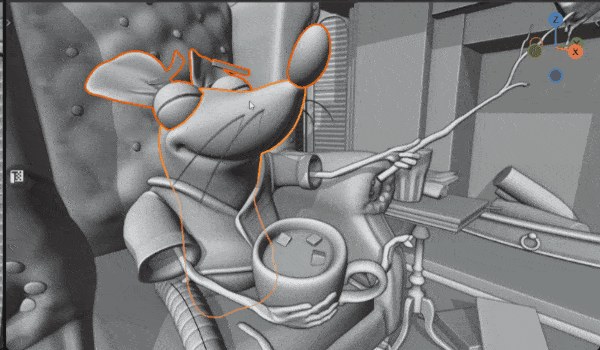
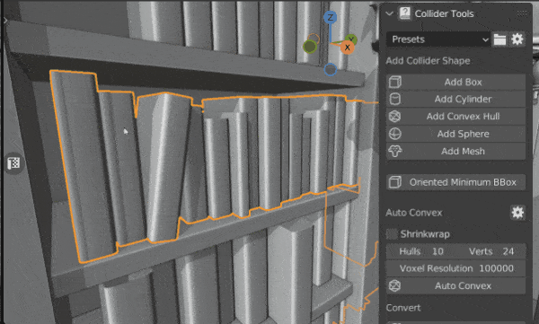
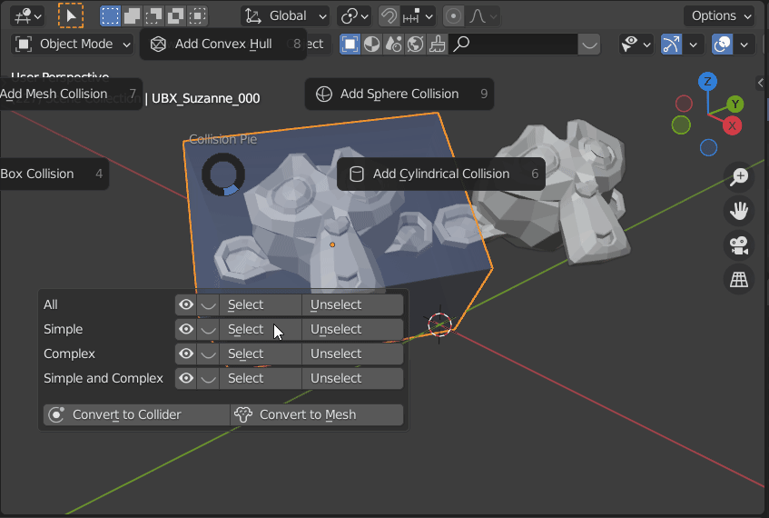
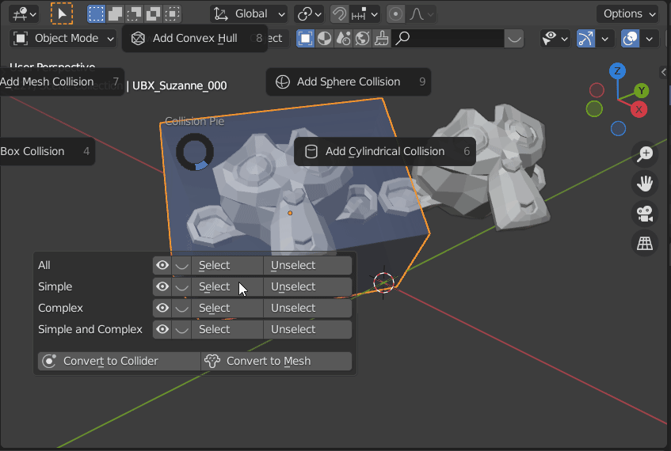
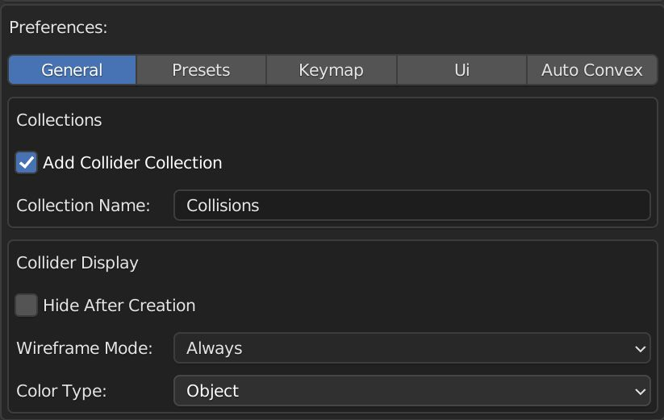
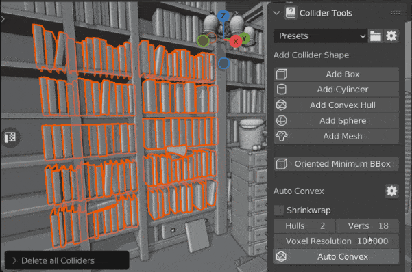
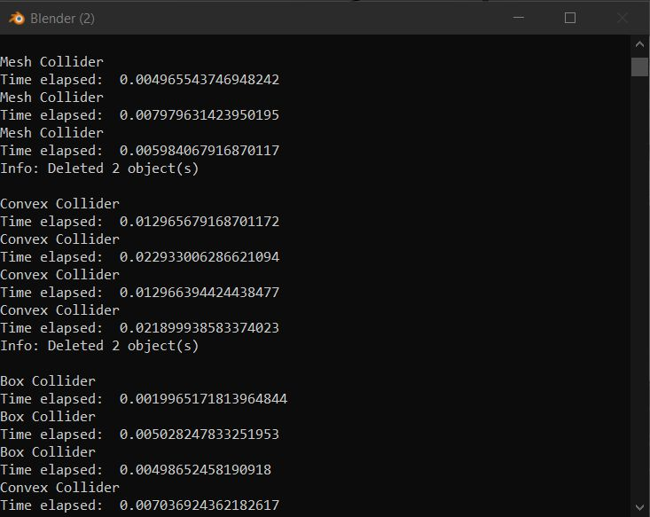

An overview of all the supported Collision shapes of the Collider Tools addon. Collider Tools supports a wide variety of collision shapes and settings to create them.
Box Collider
Box colliders are simple, efficient, and cover a wide range of use-cases.
 Scene by Glenn Melenhorst
Scene by Glenn Melenhorst
Sphere Collider
Sphere colliders are the most efficient Collision shape. Sphere collisions are usually represented by a mathematical description (location and radius) rather than polygons. The sphere meshes created by the addon are intended as a visual representation. Sphere collisions will become more expensive if they are imported as convex shapes or mesh shapes.
The sphere generation uses a fast algorithm that does not always provide the optimal result. This happens especially for simple box meshes. The results become better with more complex collisions. Improving or replacing the algorithm is planned for future releases.
 Scene by Glenn Melenhorst
Scene by Glenn Melenhorst
Convex Collider
Convex shapes are versatile while being efficient. They can be used to represent most objects, especially for engines that don't support triangle mesh collisions
 Scene by Glenn Melenhorst
Scene by Glenn Melenhorst
Convex (Cylindrical) Collider
There is no special cylindrical collision shape. This is only a tool to help create a clean cylindrical convex shape. Cylindrical shapes are very common shapes, especially in manmade structures. Physics engines will interpret them as simple convex colliders.


Warning
Currently, only GLOBAL space is supported when using the entire selection (Creation Mode: SELECTION) for cylindrical collider generation. All other parameter combinations should work as expected.
Mesh Collider
Mesh Collisions are the most complex collider shape to compute for a physics engine. Use them carefully, minimize the triangle count as much as possible and use them (only) for static objects.
 Scene by Glenn Melenhorst
Oriented Minimum Box Collider
Oriented Minimum Box Colliders are automatically oriented boxes with the smallest size possible. The computation is more complex and may be slow for meshes with a high vertex count. The output mesh is the same as regular box colliders, and it's indistinguishable to the engine how it was created.
The implementation is based on Code from Iyad Ahmed. Iyad was so kind and gave me permission of using it.
 Scene by Glenn Melenhorst
Convert
You can convert any mesh to be a collider as well as any collider to be a regular mesh object.
Mesh to Collider
You can convert any mesh object to be a collider. The conversion applies the same properties as to other collisions created with the operators from above. The objects will be renamed, added to the collision collection, and can be hidden/selected as all the other colliders.
Collider to Mesh
Collider to Mesh will remove all the collider-specific properties and materials. Convert to Mesh opens a pop-up window to set the new object name and to assign another material.
Regenerate Name
Regenerate collider names based on preset. It works best when colliders created in version 1.1 or later. In older versions it will fall back to the default values of box collision and group 1 for the naming.
 


Creation Overlay
This table contains all settings exposed to the user during the creation of a collider.
| Key | Name | Inputs | Settings | Supported | Regenerate |
|---|---|---|---|---|---|
| Esc, RMB |
Cancel | Cancel will abroad the current operation and remove the temporary colliders of this operation | All | No | |
| Enter, LMB |
Finish | Applies the current operation | All | No | |
| P | Use Modifier Stack | Bool | If Use Modifier Stack is enabled, the collision will be generated based on the visible mesh, taking changes from the modifier stack into account. | All |
Yes |
| C | Toggle X Ray | Bool | Transparent scene display. Allows selecting through items | All | Yes |
| G/L | Global/Local | Enum | Global: The object rotation is ignored and the collision is generated based on the world transformation of the vertices. The result will be the same as when appying the rotation of the object and calling the collision operator with Local Space. Local: The object rotation is taken into account. |
Box, Cylinder |
Yes |
| X/Y/Z | Cylinder Orientation |
Enum | Cylinder | Yes | |
| T | Collision Group |
Enum | USER_01: USER_02: USER_03 |
All | No |
| Q | Collision Shape |
Enum | BOX SPHERE CONVEX MESH The shapes are used for the naming. |
Convert to |
No |
| A | Alpha | Modal | Object Opacity | All | No |
| S | Shrink Inflate |
Modal | Non-destructive shrink or inflate of the geometry based on the face normal. The operation uses the displace modifier and is therefore non-destructive and can be adjusted at a later point. | All | No |
| D | Decimate | Modal | Adds a decimate modifier to reduce the geometry density. The values go from 1 to 0, 1 means the object remains unchanged while 0 means it will be reduced to the minimum. | Convex Mesh Convert V-hacd |
Yes |
| R | Sphere resolution |
Modal | Segments and Rings of the Sphere (Rings = Segments / 2) | Sphere | Yes |
| E | Segments | Modal | The amount of segments used to describe the circular shape of the cylinder. | Cylinder | Yes |
Value Input (Modal)
Some settings, like shrink/inflate, use the mouse movement for changing the settings. The sensitivity and way how the mouse movement affects the settings can be adjusted by pressing manipulator keys like Ctrl, Shift, and Alt.
| Key | Name | Description |
|---|---|---|
| Ctrl | Snap | Round value |
| Shift | Tweak | The mouse movement is more precise to allow for smaller changes. |
| Alt | Ignore | All input is ignored. You can move the mouse back to allow for bigger value changes. |
Collider Display Settings
Display settings are now part of the preferences.

| Name | Inputs | Settings |
|---|---|---|
| Hide After Creation |
Bool | The collisions will be hidden after finishing the creation. |
| Display Wireframe |
Enum | Off: There is no wireframe preview on the collision mesh Preview: The wireframes are only visible during the generation Always: The wireframes remain visible afterwards |
| Viewport Mode |
Enum | OBJECT: Show Object Color MATERIAL: Show Material Color SINGLE: Show Single Color |
Shape Creation
Collider Tools supports a wide variety of collision shapes and settings to create them. You can find all the details in the documentation. The collider creation works based on the selection, both for Object and Edit-mode. This also includes multi-object Edit-mode support.
 Scene by Glenn Melenhorst
Generate collider based on the Object Mode selection.
 Scene by Glenn Melenhorst
Scene by Glenn Melenhorst
Generate collider based on the Edit Mode selection.
 Scene by Carlo Bergonzini
Scene by Carlo Bergonzini
Colliders can be generated per object or around the entire selection - both in object mode and multi object edit mode.
Info Console
The system console can be opened from Blenders main menu -> Windows -> Toggle System Console and contains information about the computation time. The information displayed here is very basic, but could be extended in the future. This feature was implemented for being able to compare computation times.
